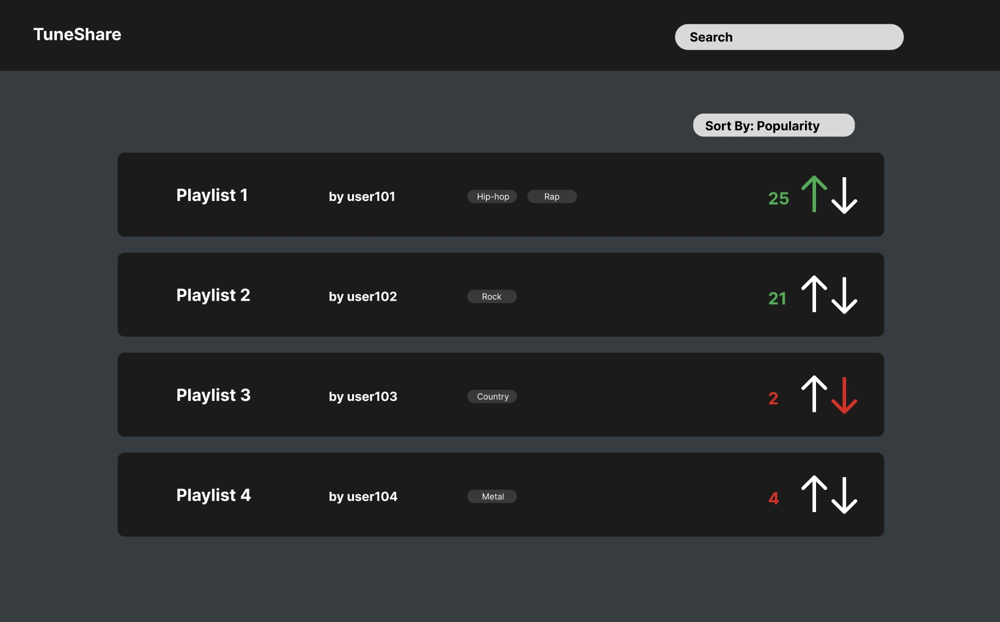
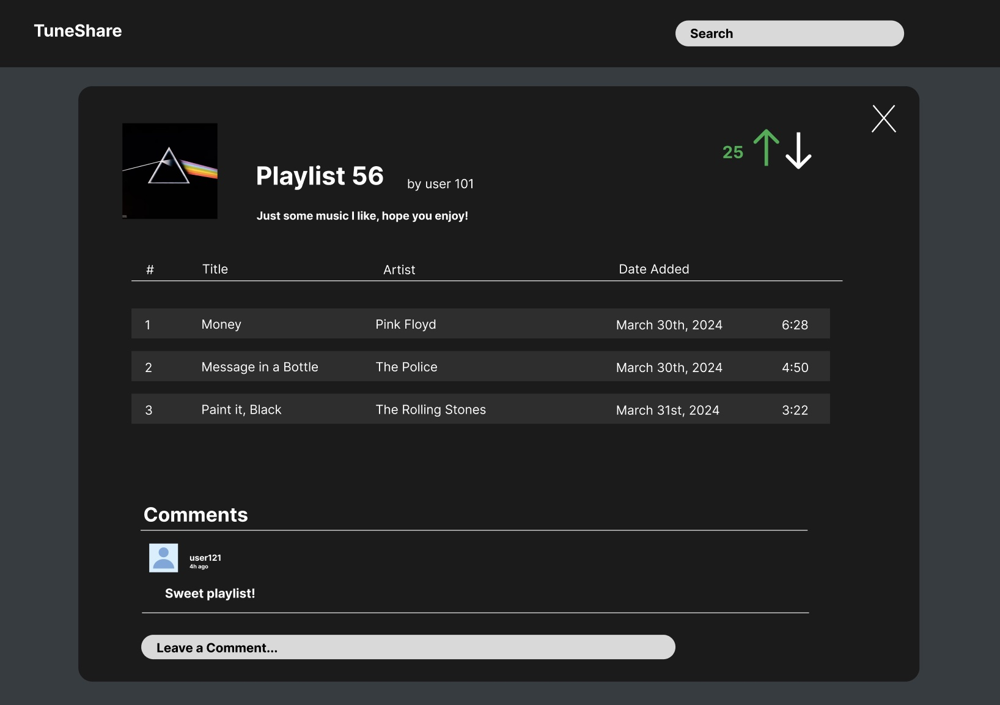
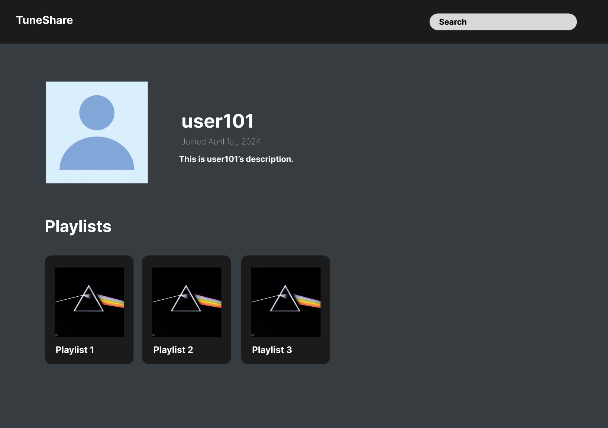

TuneShare
Team Introductions
Aditiya Bala

Informatics major, mostly experienced in Python, has some past experience in javascript, has also taken 1 or 2 courses involving R studios and PostgreSQL. Main programming platforms are Visual Studios Code and Jupyiter.
Christian Noble Shriver
Computer science major. Experience building websites with javascript, html, and css. Familiar with javascript frameworks such as React and Next.js. Also familiar with Java, python, c/c++, and git. Favorite hobby: golf.
Miles Swank

I am a CS major graduating 2024. I have experience with java, js, c, c++, python. I have worked with frameworks such as django in a professional environment. I also have used VSCode, Eclipse, Command line, github etc. Some of my hobbies include video games and working out.
William Fang
Informatics major. Experience in data science languages such as R, Python, SAS, MatLab, SQL, as well as Java. Working knowledge of Github.
Overview
Music is a meaningful way for people to communicate thoughts, emotions, and other aspects of the human experience to one another. Sharing what songs, artists, and genres one is listening to is a form of socializing that is highly demanded by many. However, today's most popular music streaming services (Spotify, Apple Music, etc.) do not provide outlets for users to easily share their music tastes on a broad scale. TuneShare aims to address this issue by offering a place for music listeners to share Spotify playlists with not just their friends, but all users of the site. Similar to traditional social media platforms, our application will have features that allow users with an account to post playlists, upvote or downvote the playlists of others, suggest additions to playlists, and more.

Application Parts
Playlist Sharing: At the heart of TuneShare is the ability for users to share their curated Spotify playlists with others. Users can easily upload their playlists to the platform, making them accessible to the entire TuneShare community. This feature enables music lovers to discover new tracks, explore different genres, and connect with like-minded individuals who share similar musical tastes.
Social Interaction: TuneShare incorporates social media elements to enhance user engagement and interaction. Users can follow each other, like and comment on playlists, and engage in discussions about their favorite tracks and artists. This social aspect of the platform fosters a sense of community among users, creating opportunities for meaningful connections and collaborations based on shared musical interests.
Playlist Curation: In addition to sharing playlists, TuneShare empowers users to curate and customize their music collections. Users can create personalized playlists tailored to specific moods, occasions, or themes, and fine-tune them with the help of community feedback and suggestions. This collaborative approach to playlist curation ensures that users can discover high-quality playlists curated by both themselves and other music enthusiasts on the platform.
By combining these critical components, TuneShare aims to provide a seamless and immersive music-sharing experience that transcends the limitations of traditional streaming services. Whether users are looking to showcase their favorite tracks, discover new music, or connect with fellow music enthusiasts, TuneShare offers a vibrant and inclusive platform where the universal language of music can be shared and celebrated.
Data Requirements
Structuring the data of our application will be crucial for scalability and ease of development. For our project, we will need to store four types of data: users, playlists, votes, and comments.
User authentication will be a cornerstone of our application. Each user will have a unique identifier, "UserID", which will be crucial for linking users to playlists, comments, and votes. Beyond a unique identifier, we will store each user's email address, username, and password. For security, we will run passwords through a hash function, so we will not have direct access to the user's passwords. Storing this information will be important for account creation and login purposes. Optional information we may keep track of may include profile pictures and bios.
Upvotes and downvotes are a simple way to gauge the quality and popularity of playlists posted on our platform. We wish to keep track of which user cast a vote, as well as if it is an upvote or downvote. For this we will assign each vote a "VoteID", the "PlaylistID" of the post the vote is cast on, the "UserID" of the user who cast the vote, and a field such as "IsUpvote" to distinguish types of votes. By modeling votes in this way, we hope to allow users to influence the ranking of playlists posted on the platform seamlessly.
Comments serve to add a layer of interaction and discussion between users. To implement a comment system we will need to keep track of the "UserID" of the user that posted the comment, the "PlaylistID" of the post where the comment resides, as well as a timestamp to display the age of a comment, and of course the content of the comment itself. Optionally we may add features such as replying to comments, and an upvote/downvote system for comments.
The playlist data model will serve as the heart of the application, the primary content around which users interact with. Each playlist will have a unique "PlaylistID", as well as a "UserID" to associate the user who submitted the playlist. We will have a field for the URL of the playlist on Spotify, which will be especially important when fetching information such as the tracklist and cover image. Other fields we wish to include are the title, description, and creation timestamp. The handling of playlist data via the Spotify API will be an essential part of our application. Data will be fetched using the Spotify URL asynchronously and loaded onto the page. This will ensure that every playlist posted on the site is always up-to-date.
In conclusion, the thoughtful structuring and management of data will ensure our application is scalable. By carefully designing data models for users, votes, comments, and playlists, we lay the groundwork for a dynamic and secure platform.
Wireframes
The application will consist of three main windows, one for viewing and sorting a list of playlists, one for viewing individual playlists and their tracks, and one for viewing users and their posted playlists. Users will be able to view playlists in a list format. Playlists will be able to be sorted in many ways including, by popularity, date added, etc. This page will display playlist names, the user who posted the playlist, and its current vote count. Optionally, we may include genre tags, but this is not a must-have feature.
When users click on a playlist, they will be brought to a page where they can see all the songs in that playlist, as well as a comment section at the bottom where other users can leave comments. At the top will be displayed an optional cover image, title, description, the user who posted the playlist, as well as the current vote count.
When users click on other usernames, they will be brought to that user's profile page. On this page, users will be able to see other users' playlists, as well as information such as the date the user joined, their profile description, and optional profile photo.
Real-World Connection
This project is a rudimentary social media platform geared towards the sharing of musical preferences and the exploration of a world of tunes. It is incredibly common for people to share their music preferences with their friends; anyone who is decently active on the internet may see their friends or other internet denizens share individual songs or full playlists via Twitter, Spotify, Instagram, Discord, or other social media platforms.
Traditional music streaming services like Spotify and Apple Music primarily focus on personalized recommendations and curated playlists based on individual user preferences. While these platforms excel at delivering personalized content, they lack robust features for users to share and discover music with a broader audience. As a result, music sharing often remains confined to social media platforms or face-to-face interactions, hindering the potential for meaningful connections and collaborations among music lovers.
TuneShare aims to bridge this gap by providing a dedicated platform for music enthusiasts to share, discover, and collaborate on playlists with a global community of users. By offering features such as playlist sharing, social interaction, and collaborative playlist curation, TuneShare empowers users to connect with like-minded individuals, explore diverse musical genres, and discover new tracks beyond their usual playlists.
Integrative Experience
The creation and deployment of Tuneshare will serve as an important collaborative experience for the members of this group. Via the development of this application, group members will draw on classroom experience in data analysis, human-centered design, data structures, and simple algorithms to collaborate on an application that resembles commonly available technologies Being similar to real technologies in use, this integrative experience provides group members with context and understanding of how to apply their skills to real-world situations. The collaborative project-based nature of this assignment closely mimics a workplace environment, forcing group members to develop and utilize communication and management skills to keep the project on schedule. Through this project, students will gain experience in a development environment, preparing them for post-undergraduate experiences.